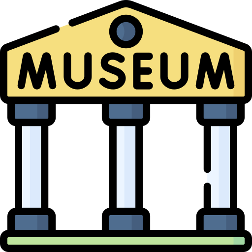

ברוכים הבאים למוזיאון האמנות הווירטואלי. אנו מזמינים אתכם למסע מרתק בין יצירות מופת, סגנונות ייחודיים וסיפורים מעוררי השראה. המוזיאון שלנו מציג אוסף מוקפד של אמנות עכשווית וקלאסית, ומאפשר לכם לחוות את הקסם של האמנות מכל מקום בעולם.
גלו את המוזיאון שלנו
הכירו את האמנים שלנו – קראו על חייהם, מקורות ההשראה והחזון של היוצרים המוכשרים שמאחורי היצירות.
היכנסו לגלריה – שוטטו בתצוגה המרהיבה שלנו, התבוננו בפרטים הקטנים וחוו את האמנות מקרוב.
תכננו את הביקור שלכם – מצאו את שעות הפתיחה, דרכי ההגעה, וכל המידע שצריך לקראת הגעתכם אלינו.